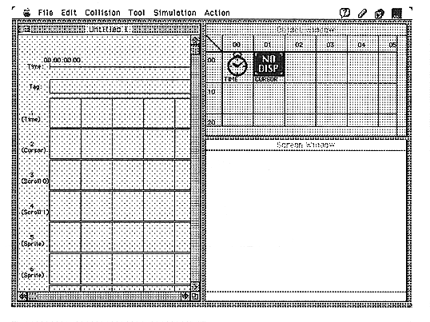

Return to previous page ｜ Return to menu ｜ Go to next page
-
2.3 Usage
-
Preparation
- Objects (movies and pictures) used in the author editor must be edited with other tools in advance.
When using the - Cinepak movie, compress it with Cinepak when making a QuickTime movie. In the case of MPEG, in the end it does not matter in any compression because you do not want to use the QuickTime movie.
The file name of - object follows the rules of MS-DOS file name, and the extension is “MOV” for movie and “PCT” for picture. For details, see “5. Data Format”.
Keep all - objects in the same folder.
-
Start and exit
- To start the author editor, double-click the application file AT_EDIT icon. The startup screen is shown in Figure 2.2. To exit, select “Quit” from the File menu.

Figure 2.2 Startup screen
Return to previous page ｜ Return to menu ｜ Go to next page